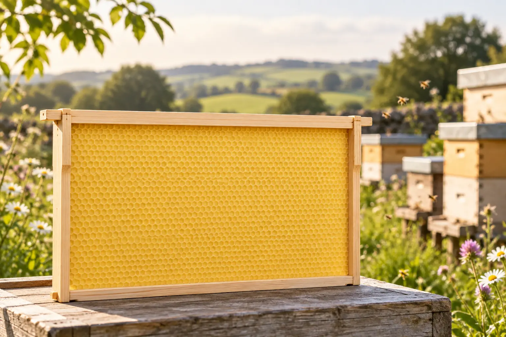
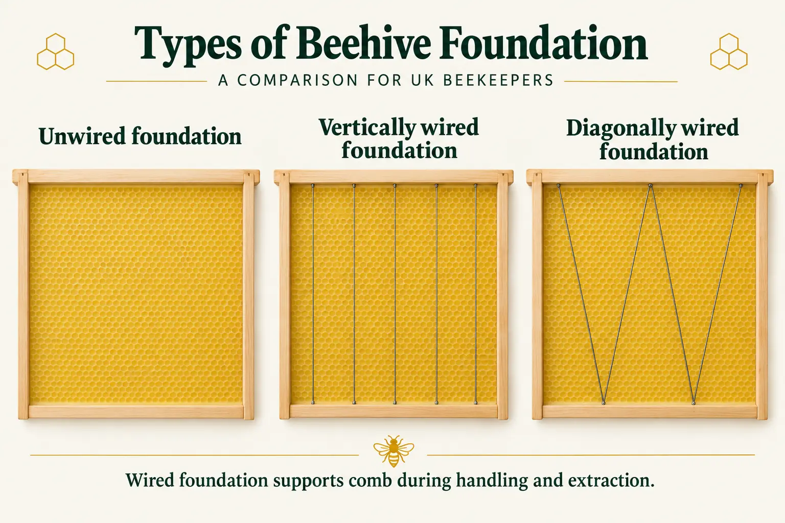

Last updated: 27 September 2026

Beehive Foundation Can Be Just as Confusing as the Frames
Once you have chosen the correct wooden frame, the next question is what goes inside it. Supplier catalogues may offer wired, unwired, vertically wired, diagonally wired, brood, super, thin, cut-comb, worker, drone, plastic, black, coloured and foundationless options.
The important point is that these descriptions refer to different things. Some describe the material, some the reinforcement, some the cell pattern, and others the intended use.
This guide is written for UK beekeepers and follows directly from our Beehive Frames Explained guide. If you are unsure whether you need SN, DN, 14×12, Commercial or another frame size, start there first.
What Is Beehive Foundation?
Foundation is a thin sheet fitted inside a beehive frame to give the colony a guide from which to build comb. Traditional foundation is made from beeswax and is embossed with the beginnings of hexagonal cells. Plastic foundation uses the same basic principle but provides the cell pattern on a rigid synthetic sheet.
Foundation does not become the finished comb. The bees add wax to the cell impressions and draw them out until they form the full-depth cells used for brood, pollen or stores.
Frame and foundation must match
A DN brood frame needs foundation made for that frame size; an SN super frame needs shallow foundation; a 14×12 frame needs extra-deep foundation, and Commercial, Langstroth, Dadant and other systems need their corresponding sizes.
Wired vs Unwired Foundation

One of the first choices you will see is wired or unwired foundation.
Wired foundation
Wired foundation has reinforcing wire embedded in the wax sheet. The wire gives the sheet extra support and helps the finished comb withstand handling, warm weather and the forces involved in centrifugal honey extraction.
It is commonly used in brood frames and extracted-honey supers where the comb will be kept and reused.
Unwired foundation
Unwired foundation contains no embedded reinforcing wire. It is useful where the wax itself is intended to be harvested, particularly for cut comb, because there is no wire running through the finished honeycomb.
Unwired foundation can also be used with frames that are themselves wired, because the reinforcement may come from tensioned wire in the wooden frame rather than from wire already embedded in the wax.
How Is Foundation Wired?
The words wired foundation do not always mean that every sheet is reinforced in exactly the same way. The pattern depends on the manufacturer and the intended frame.
Vertical or crimped wire
Some foundation is reinforced with wires running vertically through the wax from top to bottom. The wire may be crimped or formed so that it grips the wax more securely.
Diagonal or W-pattern wire
Other foundation is reinforced with wire running diagonally across the sheet, often forming a zig-zag or W-type pattern. The purpose is the same: to support the sheet and help the comb remain stable.
Cross-wired wooden frames
Larger or differently designed frames may have wire tensioned horizontally or diagonally through the wooden side bars. The wax foundation is then fixed or embedded onto those wires. This is particularly important when reading supplier descriptions because “wired foundation” and “wired frame” are not the same thing.
Brood Foundation and Super Foundation
Brood and super foundation are normally made to fit different frame depths. In a standard British National or WBC hive:
- DN foundation fits the deeper brood-frame family.
- SN foundation fits the shallower super-frame family.
The same principle applies to 14×12, Commercial, Smith, Langstroth and Dadant equipment. Always buy foundation for the actual frame size rather than relying only on words such as “brood” or “super”.
Beeswax Foundation
Beeswax foundation is the traditional choice. It smells and feels familiar to the colony, can be drawn into comb quickly when conditions are right, and can be melted down and recycled when the comb is eventually replaced.
Colour varies naturally. Freshly processed wax may be pale cream or yellow, while recycled wax can be darker. Colour alone does not tell you everything about quality.
Wax quality and provenance matter
Foundation is part of the colony's living environment, so it is sensible to buy from a reputable beekeeping supplier with a clear source for its wax. Poor-quality or adulterated wax can behave differently when warmed and may not be accepted or drawn normally by the bees.
Plastic Foundation
Plastic foundation is a rigid alternative to wax sheets. It is moulded with the cell pattern already present and is often supplied with a thin beeswax coating to encourage the bees to begin drawing it.
Its rigidity means it does not sag in the same way as an unsupported wax sheet, and it can be cleaned and reused if the product is designed for that purpose. It must still be the correct dimensions for the frame and hive system.
Plastic foundation is sold in several colours. Black is sometimes chosen in brood frames because pale eggs and young larvae can be easier for the beekeeper to see against a dark background once the comb has been drawn.
Thin Foundation and Cut Comb
If the finished honeycomb is going to be cut from the frame and eaten as comb honey, ordinary heavily reinforced foundation is not ideal. Beekeepers generally use thin, unwired cut-comb foundation so that the finished section contains as little sheet wax as practical and no reinforcing wire.
Because the comb is not being put through an extractor, it does not need the same reinforcement as a frame intended for repeated centrifugal extraction.
Do not put wired foundation into comb honey you intend to cut
The reinforcement is designed to stay in the comb. For cut comb, choose foundation specifically sold for that purpose.
Worker Foundation and Drone Foundation
Most ordinary brood foundation is embossed with worker-sized cell impressions. Drone foundation has noticeably larger cell impressions and encourages the bees to build drone-sized cells in that part of the hive.
This can be useful if you want to control where the colony produces drone comb rather than allowing large patches of drone cells to appear in other combs.
Drone foundation and Varroa
Because Varroa mites reproduce successfully in capped drone brood, some beekeepers use a dedicated drone comb as part of a drone-brood trapping or removal programme. The brood must be removed at the appropriate stage before the drones emerge, otherwise the mites simply emerge with them.
Drone-brood removal should be treated as one possible component of an integrated Varroa-management approach rather than as a complete treatment by itself. Our Varroa Management section covers monitoring and treatment choices in more detail.
What About Small-Cell Foundation?
Small-cell foundation uses a smaller embossed worker-cell pattern than conventional worker foundation. It is sometimes promoted as a way of influencing bee development or Varroa reproduction.
Those claims should not be confused with established Varroa-control methods. If you choose to experiment with small-cell foundation, continue to monitor mite levels and use an appropriate Varroa-management plan rather than assuming the foundation itself provides reliable control.
Foundationless Frames
Bees do not need an embossed wax sheet in order to build comb. A foundationless frame provides a guide — such as a starter strip, bevelled top bar or narrow wax line — and allows the colony to build its own comb below it.
This can reduce the amount of purchased foundation used and allows the bees to determine more of the comb pattern themselves. The trade-off is that new natural comb is delicate and the bees need to start it straight.
A level hive, correctly spaced frames and careful handling are particularly important while foundationless comb is new and soft.
Which Foundation Fits Which UK Frame?
| Frame or use | Foundation to look for | Typical notes |
|---|---|---|
| National/WBC brood | DN brood foundation | Wired wax is a common choice for reusable brood comb. |
| National/WBC super | SN super foundation | Wired for extracted honey; thin unwired for cut comb. |
| 14×12 brood | 14×12 foundation | Needs the extra-deep sheet made for 14×12 frames. |
| Commercial | Commercial foundation | Choose the correct deep or shallow Commercial size. |
| Langstroth | Matching Langstroth foundation | Not interchangeable with National foundation simply because both may be called “deep”. |
| Cut comb | Thin unwired foundation | Designed to be eaten with the comb and cut from the frame. |
| Drone comb | Drone-cell foundation | Larger cell impressions encourage drone comb. |
What Should I Buy for a Standard National Hive?
For a beekeeper using a conventional British National hive, a straightforward starting point is:
Brood box
DN-size worker foundation, commonly wired beeswax foundation if you want supported, reusable comb.
Honey supers for extraction
SN-size wired foundation gives the comb support during extraction and allows the drawn comb to be returned to the colony and reused.
Honey supers for cut comb
Use thin unwired cut-comb foundation made for the appropriate shallow frame.
The wooden frame and the foundation are separate purchases, so check both specifications before ordering. If the frame codes themselves are still unclear, see Beehive Frames Explained: SN1, SN4, DN4, 14×12 and More.
A Simple Way to Choose Foundation
- Identify the frame size. DN, SN, 14×12, Commercial, Langstroth or another system.
- Decide what the comb will be used for. Brood, extracted honey, cut comb or drone comb.
- Choose the material. Beeswax or a compatible plastic system.
- Decide whether reinforcement is needed. Wired foundation, a wired wooden frame, or no wire for cut comb.
- Check the cell pattern. Worker, drone or another specialist pattern.
- Buy from a reputable supplier. Especially when choosing beeswax foundation.
The Short Version
- Foundation must match the frame size.
- Wired foundation contains reinforcing wire in the sheet.
- A wired frame has wire tensioned through the wooden frame — it is not the same thing.
- Wired foundation is useful for comb that will be handled and extracted repeatedly.
- Thin unwired foundation is the usual choice for cut comb.
- Plastic foundation is rigid and may be supplied wax-coated.
- Drone foundation encourages larger drone cells and can be used in managed drone-comb systems.
- Foundationless frames allow bees to build comb from a guide without a full sheet.
Frequently Asked Questions
Foundation is a thin sheet, usually beeswax or plastic, embossed with the beginnings of cells and fitted into a frame to guide the bees as they build comb.
Wired foundation contains reinforcing wire embedded in the sheet. Unwired foundation does not and is particularly useful for cut comb or where the wooden frame provides its own wire support.
No. Wired foundation contains wire in the wax sheet. A wired frame has wire tensioned across or through the wooden frame, onto which foundation can be fixed.
Yes, provided it is the correct size and is designed for beekeeping. Many plastic products are supplied with a beeswax coating to encourage the colony to start drawing them.
Drone foundation has larger cell impressions and encourages drone comb. It can help control where drone brood is produced and may be used as part of a carefully timed Varroa-management programme.
Yes. Foundationless frames provide a starting guide and allow the bees to build natural comb, although careful alignment and handling are important while new comb is soft.
Join the Conversation
Beekeeping is all about learning from one another. Follow BeezKnees for more practical UK beekeeping guides, seasonal observations and equipment explainers.
Follow the BeezKnees Facebook Page